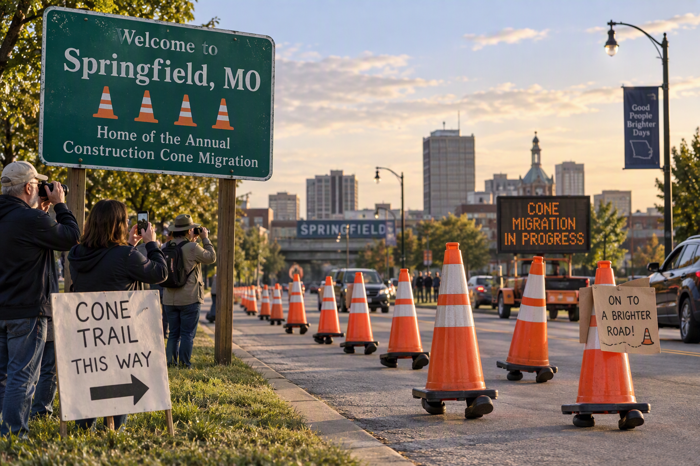

University Announces New Major in “Starting Assignments Tomorrow”
In a move administrators are calling “a natural response to student demand,” the University announced Monday the creation of a new degree program: Bachelor of Arts in Starting Assignments Tomorrow.
The program reportedly attracted over 12,000 students within the first hour, though officials noted that only three had begun the enrollment form.
“This major reflects the skills students are already developing,” said Provost Linda Harris. “Our graduates demonstrate expertise in opening a blank document, researching productivity techniques, and convincing themselves they'll be more motivated after lunch.”
The curriculum includes popular courses such as:
- PRO 101: Advanced Deadline Negotiation
- PRO 215: Looking Busy in the Library
- PRO 302: Group Projects and Strategic Disappearing
- PRO 450: Writing 15 Pages in One Night
- PRO 499: Capstone Panic
Students praised the new major for finally recognizing the realities of campus life. “I've spent four years preparing for this,” said junior Ethan Reed while watching videos titled How to Stop Procrastinating instead of studying. “Some people call it avoidance. I call it field research.”
Faculty members also unveiled a new grading system based on a metric known as Academic Velocity, defined as the amount of work completed in the final six hours before a deadline. According to researchers, students operating under peak Academic Velocity can produce an entire literature review, three discussion posts, and a sudden interest in office hours between 11:30 p.m. and 11:59 p.m.
The university's IT department has meanwhile reported record traffic to the learning management system at exactly 11:58 p.m. every night. "We don't know why students wait until the last minute," said one administrator while reviewing server logs. "It's one of higher education's great mysteries."
At press time, seniors across campus were confidently assuring each other that they had "plenty of time" before discovering that their final project was due yesterday.
Springfield Residents Excited to Witness Annual Construction Cone Migration

SPRINGFIELD, MO — Residents across Springfield gathered this week to celebrate one of the region's most treasured seasonal traditions: the annual migration of orange construction cones. The event, which occurs whenever a road appears to be functioning normally, marks the arrival of thousands of cones to new habitats throughout the city.
"It's beautiful, really," said local resident Mark Henderson while taking a 17-minute detour around a single blocked lane. "One day the road is open, and the next morning there are cones everywhere. Nobody knows where they come from, but nature finds a way."
According to experts from the Springfield Institute of Transportation Mysteries, construction cones spend most of their lives hidden before emerging overnight to establish territories in highly visible traffic areas.
Researchers estimate a mature cone can survive for months without any observable road work occurring nearby. "We're still studying how they sustain themselves," said transportation researcher Amanda Lewis. "In some cases, we've documented cones occupying the same location so long that nearby residents use them as landmarks."
The city's tourism bureau has embraced the phenomenon, unveiling a self-guided Cone Trail featuring several historically significant cone colonies.
Notable attractions include:
- The Single Cone Guarding Absolutely Nothing
- The Mysterious Closed Lane That Reopens 50 Feet Later
- The Endangered Barrel Cluster Near Battlefield Road
- The Rare Triple-Merge Formation
Local drivers report mixed feelings about the migration. "I complain about the cones every day," said commuter Jennifer Clark. "But when they finally leave, the road feels empty. You start wondering how they're doing." At press time, officials had announced a new infrastructure project to remove unnecessary traffic cones, beginning with the placement of several hundred cones around the planning area.